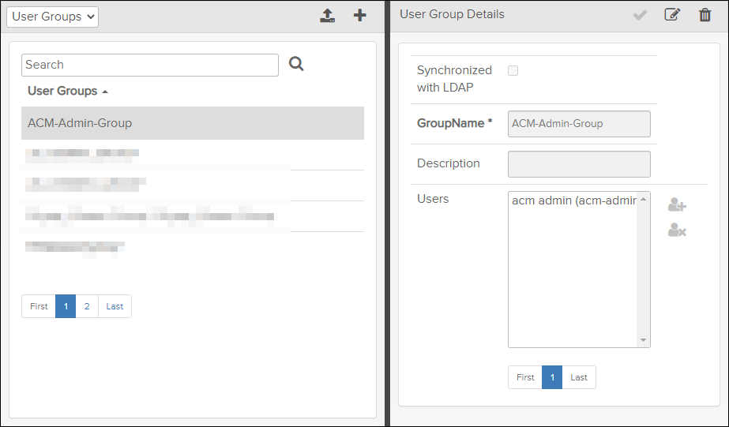

If your user role has
Read permission for the User Groups
privilege, you can access the User Groups / User
Roles page by clicking the  User Groups icon on the header bar. By default, the User
Groups list is shown, but you can toggle between the User
Groups list and the User Roles list from the drop-down
menu at the top of the left-side
pane.
User Groups icon on the header bar. By default, the User
Groups list is shown, but you can toggle between the User
Groups list and the User Roles list from the drop-down
menu at the top of the left-side
pane.
The User Groups / User Roles page is a tool for creating, editing, deleting, and viewing user groups and user roles. You can also set which users belong to which group(s) and role(s).
A user group is a collection of users with a given set of permissions assigned to the group. A user role is a collection of permissions, and a user inherits those permissions when acting under that role.
- acm-admin (user)
- Acmadministrators (role)
- User Groups / User Roles (toggle - left side): Lists all user groups or user roles available for your organization and allows you to search for user groups/user roles.
- User Group Details / User Role Details (right side): Shows detailed information about a selected user group or user role.

User Groups Example
The table below describes the fields and features in the User Groups/User Roles section.
| Component | Description |
|---|---|
| User Groups / User Roles drop-down menu | Toggles between User Groups and User Roles. |
| Button for importing user groups from a CSV file. Note: This feature is
available for User Groups only.
|
|
| Button for creating a new user group or user role. | |
| Search field and |
Enter text in this field and click the The search is not case sensitive and has support for "*" and "%" wild cards. A hidden "%" wild card is automatically applied in front of and behind the entered text. This means that a search for "test" returns "tests" and "tester" in addition to the actual search word. You can also use the "*" or "%" wild card to replace characters in the search word. A search for "analy*er" will return both "analyser" and "analyzer". The number of user groups or user roles found in a search is displayed in footer. |
| User Groups / User Roles list |
The list shows all user groups or user roles registered for your organization. When you select a user group or user role in the list, you will see detailed information about it in the User Group Details/User Role Details section on the right side. If a description exists for the user group or user role, it is included in the list, for example: Dev Test Users | This is a group for testers in the development group. If the list contains more entries than can fit into one page, the list is paged and you can navigate between the pages using the navigation buttons below the list. |
The table below describes the fields in the User Group Details / User Role Details section.
| Component | Description |
|---|---|
 Save icon
Save icon |
Button for saving a user group or user role. |
 Edit icon
Edit icon |
Button for initiating editing of a user group or user role. Refer to Edit User Group / User Role. |
 Delete icon
Delete icon |
Button for deleting a user group or user role. Refer to Delete User Group / User Role. |
| GroupName / RoleName (Required) | Name of the selected user group or user role. |
| Description field | Description of the selected user group or user role. |
| Users list | List of all users (and their user names in parenthesis) included in the
selected group or user role. If the list contains more entries than can fit into one page, the list is paged and you can navigate between the pages using the navigation buttons below the list. |
| Click this icon to add users to the Users list. | |
| Click this icon to remove the selected user from the Users list. |